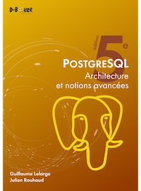

Livres#
Sélection de livres en français s’articulant autour de PostgreSQL
PostgreSQL - Architecture et notions avancées#
5 ème édition de ce livre écrit par:
Guillaume Lelarge
Julien Rouhaud
Lien vers PostgreSQL - Architecture et notions avancées (5e édition)
EAN: 9782822711241
ISBN: 978-2-8227-1124-1
Présentation#
Pour maîtriser PostgreSQL, rien de mieux que de comprendre son fonctionnement interne. C’est ce que vous proposent Guillaume Lelarge, consultant chez Dalibo, contributeur majeur de PostgreSQL, ainsi que Julien Rouhaud, auteur notamment d’HypoPg, avec ce livre sans équivalent, pas même en anglais.
Dans un style clair et précis, il vous explique en détails la mécanique de ce puissant système de gestion de bases de données open-source, vous aidant ainsi à en comprendre toutes les subtilités et donc à mieux l’administrer, le paramétrer, le superviser… en un mot à mieux l’utiliser.
Sa lecture ne requiert pas de connaissances avancées en PostgreSQL, ni la maîtrise préalable d’un autre moteur de bases de données. En revanche, il est préférable que vous soyez à l’aise avec le fonctionnement d’un système d’exploitation comme Linux. Une connaissance modérée du langage SQL sera un plus.
Cette cinquième édition, entièrement revue et complétée, prend en compte les nouveautés des versions 15 et 16 (septembre 2023). Lorsque des différences importantes dues aux versions sont à noter, elles sont indiquées aussi clairement que possible.
Sommaire#
Instance
Fichiers
Contenu physique des fichiers
Architecture des processus
Architecture mémoire
Protocole de communication
Gestion des connexions
Gestion des transactions
Gestion des objets
Planification des requêtes
Sauvegarde et restauration
Réplication
Statistiques d’activité
Collecte et traitement des traces
Maintenance
Sécurité
PostgreSQL - Administration et exploitation de vos bases de données#
4 ème édition de ce livre écrit par:
Sébastien Lardière
Lien vers PostgreSQL - Administration et exploitation de vos bases de données
EAN: 9782409011467
ISBN: 978-2-409-01146-7
Présentation#

L’administrateur de bases de données, le technicien d’exploitation et le développeur trouveront dans ce livre les informations indispensables pour exploiter au mieux toutes les possibilités de PostgreSQL (en version 10 au moment de la rédaction).
Les premiers chapitres du livre couvrent l’installation de PostgreSQL sur Windows et GNU/Linux ainsi que la préparation de l’environnement d’exécution du serveur. L’auteur présente ensuite les applications clientes pouvant être utilisées, les différents paramètres de sécurité et les différents aspects de PostgreSQL concernant le support du langage SQL. Les chapitres qui suivent introduisent la programmation dans PostgreSQL et détaillent l’administration et l’exploitation (de la configuration du serveur aux différentes tâches d’exploitation, en passant par les sauvegardes). Un chapitre présente des outils annexes enrichissant l’utilisation de PostgreSQL. Enfin, l’auteur introduit le thème de la réplication des données entre différents serveurs, en étudiant la réplication physique et logique intégrée à PostgreSQL ainsi que l’outil Slony.
Sommaire#
Installation
Initialisation du système de fichiers
Connexions
Définition des données
Programmation
Exploitation
Outils
Réplication
PostgreSQL - Entraînez-vous à créer et programmer une base de données relationnelle#
Livre écrit par:
François-Marie Colonna
Lien vers PostgreSQL - Entraînez-vous à créer et programmer une base de données relationnelle
EAN: 9782746043817
ISBN: 978-2-7460-4381-7
Présentation#

Conçu par un formateur, ce livre sur PostgreSQL est destiné à un public de lecteurs débutants ou initiés, déjà familiers de l’utilisation d’une base de données relationnelle.
Au travers d’un travail pratique dont le fil conducteur s’étend sur les 7 premiers chapitres, les exercices proposés couvrent la conception de la base de données (création de tables, de types de données, de domaines), l’interrogation de la base à l’aide de requêtes SQL (sélection, insertion, mise à jour, suppression), les transactions (niveaux d’isolation, verrouillage) et la programmation côté serveur (vues, règles et déclencheurs).
Les pré-requis proposés au début de chaque chapitre permettent au lecteur d’évaluer précisément ses connaissances avant d’aborder les exercices.
Le dernier chapitre est un exercice de synthèse qui reprend sur un sujet différent toutes les notions abordées dans les premiers chapitres du livre. 209 QCM - 81 travaux pratiques et leurs corrigés - Près de 30 H de mise en pratique.
Sommaire#
Connexion à PostgreSQL et création des tables
Requêtes SQL de base
Requêtes SQL avancées
Vues, règles, droits et tables système
Transactions et concurrence
Fonctions SQL et langages procéduraux
Déclencheurs
TP de synthèse - Gestion d’une librairie